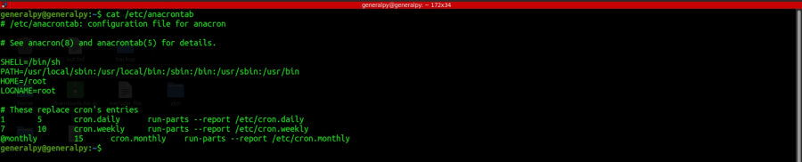
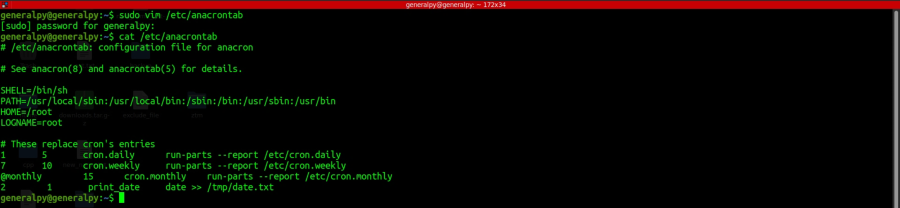
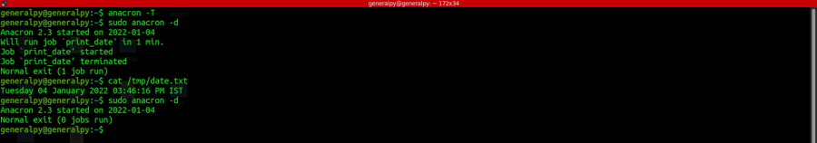
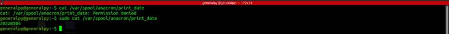

Anacron is used to schedule tasks that run on normal desktops and daily use devices. Cron, if it misses a task if system in down, doesn't excute it when system is up again but anacron executes the scheduled task on boot if system is down.
cron is a daemon but anacron is simple script which can be executed by user on demand and it must be executed to execute scheduled tasks. Infact anacron starts on computer boot.
anacrontab file contains anacron job. This file is located in /etc/anacrontab.

Anacron schedule tasks according to days unlike cron which schedule tasks according to minute.
Format of anacron line is :
day_interval interval identifier commandDay interval parameter defines at what intervals of day anacron must run that task. Interval is the time difference at which anacron must run a job.It is according to start of anacron. This is to ensure that system is not overloaded. Identifier is a unique name give to each anacron job. A file with that identifier is stored under /etc/spool/anacron which stores timestamps of when last time that job was exeuted.
Let's schedule a job which runs after 1 minute of start of anacron after every 2 days.
2 1 print_date date >> /tmp/date.txt

To verify the file use if there is no error, output of this command will be empty
anacron -T
To run anacron task, run anacron command as root. Anacron is usually run in background but we can override this feature by using -d flag.

